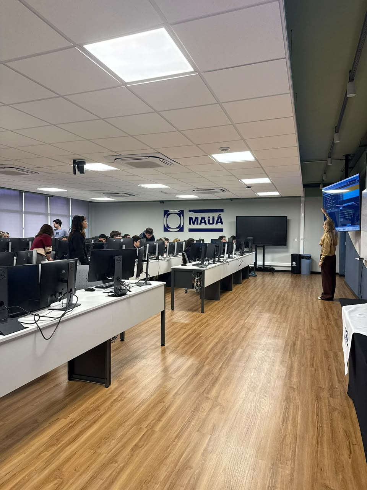

Duas aulas, quatro horas cada, e uma turma de estudantes do ensino médio dando os primeiros passos em programação — o primeiro projeto do ramo mais novo do IEEE Mauá.
for aluno in turma: aluno.aprender("Python") print("Bem-vindo à programação!")
O Computer Society é o ramo mais recente do IEEE Mauá, fundado no início de 2026 com o objetivo de aproximar a área de computação da entidade de projetos práticos e educacionais.
O primeiro projeto do ramo nasceu dessa ideia: levar noções de lógica de programação e Python para estudantes do ensino médio, num projeto pensado e executado do zero pelos próprios membros — do planejamento das aulas até o dia da apresentação.
Estrutura geral de cada encontro de 4 horas com a turma.
Quem se envolveu no projeto teve a participação reconhecida como atividade de extensão, de acordo com a frente em que atuou:
Para quem ajudou a ministrar as aulas presencialmente aos estudantes.
Para quem participou do planejamento, criação de conteúdo e estruturação do projeto.
Espaço reservado para os slides usados nas aulas — cole aqui o link de embed do Google Slides, Canva ou PDF.
Alguns momentos com a turma do ensino médio — fotos reais entram aqui.

Espaço reservado para os nomes de quem ajudou nas aulas e no desenvolvimento.